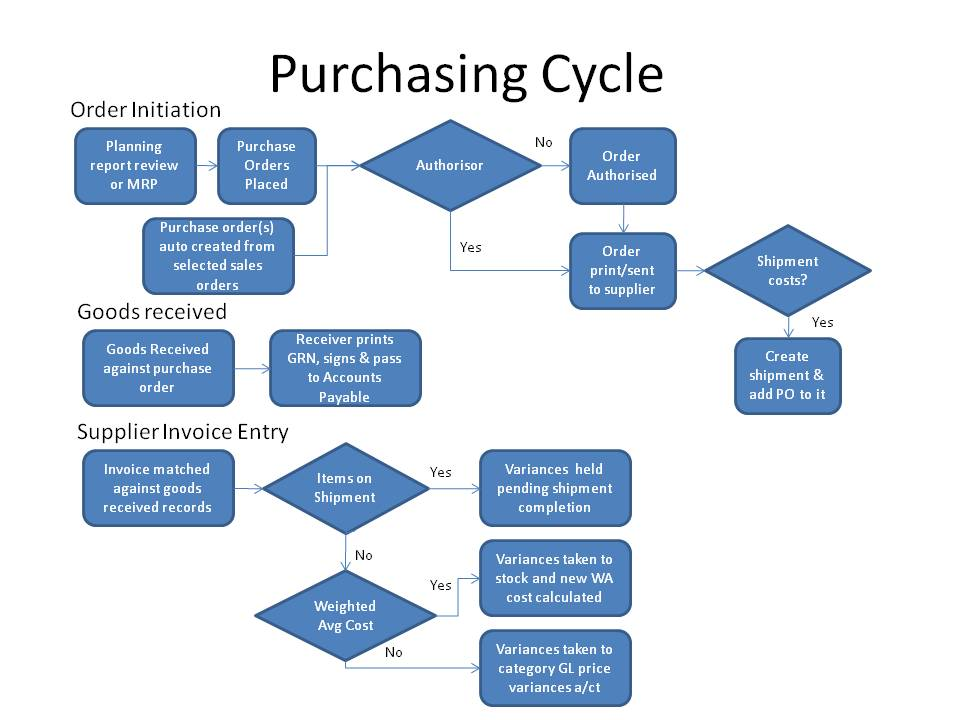

Overview
Purchase orders are the contract initiated by an organisation with it's suppliers (vendors). Since, purchase orders commit the business to expenditure it is important to ensure that the committment is not made without the proper authority. webERP forces certain procedures to be followed to ensure proper authorisation. The sequence is:
- An operator with access to the purchase order creation creates the purchase order.
- It is possible if this user has access to authorise the purchase order to have it authorised automatically. This requires a configuration setting to be enabled to allow this. Normally, another user with appropriate authorisation levels is required to authorise the order. Authorisation levels can be set by user and currency and by the amount of that currency. For example a user maybe able to approve purchase orders up to $1000 in USD. Orders cannot be printed and sent to a supplier until they are authorised.
- Users who are valid authorisers have a special screen to see which orders require authorisation - they can authorise the orders from there.
- A trail of who initiated the order, who changed an order and who authorised an order with dates is maintained in the status comments
- Once an order is authorised it must be printed - it is not possible to receive any stock against an order that has not been printed
- Once printed it is now possible to receive stock against the order
It is necessary to create purchase orders to receive stock. Stock cannot be received in without an order - except by entering a stock adjustment. The receiving of stock creates a GRN - Goods Received Note that can be printed and signed off by the person entering the receipt of stock. The system retains records of the GRNs and these must be matched off against purchase invoices to ensure that only those goods received are paid for.

Purchase Orders Status
The order status starts off as:
- Pending - the order has been created but not authorised
- Authorised - the order has been authorised but not printed
- Printed - the order has been authorised and printed and is ready to receive
- Cancelled - the order has been cancelled. Cancelled orders are not deleted, they are retained for audit purposes - who cancelled it and the date is available for inspection in the status comments field
- Rejected - if an authorisor disagrees with the requirement to purchase this order the status of the order is changed to rejected. In many respects this status is treated the same as cancelled
- Completed - the order is fully received or no more will be received on the order. webERP maintains changes the status to completed when all lines of the order are fully received - or the line is amended to have the same amount as already received.
Amending Purchase Orders
When you click the Purchase Orders, you can search for the outstanding Purchases, it is possible to search by purchase order number or the stock location where the order is set to receive into, or search for an item and then search for purchase orders that have that item on it. Searching the orders shows all the orders that match the criteria with their status and links with the options relevant to their status shown. The links allow the order to be modified, printed, received depending on the status of the order. The supplier and the amount of the order are also shown on the search screen.
If the order is pending then it is possible to modify the order and any lines on the order. If the order had been authorised or printed then whilst it is still possible to amend any aspect of the order, it will need to be reauthorised as the status is changed back to pending - this is to ensure that there is no way for someone without the necessary authorisation level of committing the business to purchase more than they should be doing!
If the order is completed, it is not possible to modify it.
If the order is rejected, it is possible to change the order to authorised - by a user with appropriate authority.
Adding a New Purchase Order
To add a new Purchase Order, Click on Main menu.
- Select the Purchasing Module
- Click on Add Purchase Orders
- Enter the suppliers name or supplier code and click search.
- Select the supplier from whom you want to purchase.
- Fill in the information for both the supplier and warehouse where the goods are going to be delivered.
The purchase order date, delivery date, Requisition Ref, warehouse name, Address lines 1 to 4, telephone number, and the deliverers ) Then the supplier information that need to be entered include the address line 1to 4 that needs to be entered , the phone number, the payment terms , and there is a field to type in any comments if necessary.
- Click Enter line items.
- This will allow you to select the stock category for the stock items you want - you can elect to choose "All" stock categories to list all stock
- Click Search Now, a list showing the items meeting the criteria will display
- It is possible to enter the quantity you require in the quantity field in the list. Be aware that this is the supplier's unit quantity that is being entered here
- Click order some - all the lines with a quantitiy entered will come up in the order at the current supplier purchasing price. if no purchasing data is set up for the item/supplier, then the purchase price will need to be entered manually.
- Click on "Update Order Lines" to recalculate the extended amount of the order
- Then click "Process Order"
A success report should display showing that you have created a purchase order.
If the configuration setting to automatically authorise the purchase order is enabled, then if your authority allows you to authorise purchase orders in the suppliers currecny and your authority level exceeds the amount of this order, then the order should automatically be authorised.
If you have authority to authorise purchase orders but the configuration setting to automatically authorise purchase orders is not set, then you will need to do another step to authorise it. There is a special screen to allow selection of pending orders for authorisation, alternatively it is possible to modify the order and change it's status manually to authorised.
If you do not have the authority to authorise purchase orders in the currency of the supplier, to the value of the order, then a duly authorised person will be required to authorise it before it is possible to print the order.
Authorising Purchase Orders
Here the directors and authorising officials will log into webERP to look for purchase orders that have been raised and they will either cancel, reject, or authorise these purchase orders.
Below are the steps of authorising purchase orders
- Click on Main menu
- Click on Purchases
- Click on Orders to Authorise
- The status of the purchase orders will be pending
- Drop this down and select authorise
- Click update
This will enable the person who created purchase orders to print and receive them. In order to Receive a purchase order, it has to be printed first and sent or emailed to the supplier. (N.B this can't be done unless the purchase order is authorised)
Once a purchase order is authorised it can then be printed as follows:
- Click on Main menu
- Click on Purchase Orders
- Go to Search outstanding purchase orders and select the purchase order you are looking for
- The options to Print, Receive or modify should show
- Click on the Print option
After printing this purchase order you can send it to the supplier through an email or print it out and post it. If the order is being shipped by the supplier and there are additional costs to take into account, then you should use shipment costing and add the order to a shipment. Using shipment costing ensures that the costs of shipping and transport are apportioned between all the items on the shipment. See shipment costing section of the manual.
Receiving Purchase Orders
- When the supplier delivers the goods to the warehouse , the stock manager will log into webERP
- Click main menu -> Purchasing Module
- Clik Purchase orders and enter criteria to select the purchase order you require
- Assuming the order is authoirsed and printed there will be an option to "Receive" - click Receive
- The Goods Received screen shows and allows the quantities received to be entered. This quantity will show in the businesses units of measure but the conversion and the quantity in the suppliers unit of measure will also show.
- If the item being received is a controlled item, the batches/rolls/lots/serial numbers being received need to be specified individually and the system keeps track of how many in total are being received.
- Only the quantity received should be entered, this may well be different to the original order quantity because the supplier might not deliver all the ordered items at the same time, and at this point we need to record exactly what has been delivered, and not what has been ordered. He might deliver in parts. So these changes are supposed to be effected at this point before processing a Goods Received Note.
- Then click update.
- Click on Process a Goods Received (GRN), finally click on Print a Goods Received Note (GRN).
The goods received note should signed off by the person who received the goods - optionally a copy to the supplier's driver.
An alternative short-cut method is also provided for auto-receiving purchase orders at the prices defined in the purchase order, for authorised purchase orders. After having entered a purchase order or modified a purchase order a link to automatically receive the entire order and create the supplier invoice will show if the order is authorised. This will happen automatically if the configuration option to auto authorise purchase orders is set and the user creating or modifying the order is authorised to do so. Clicking this link will receive all the items on the purchase order to the extent there is any quantity yet to be received. However, this program cannot handle controlled items. If there is even one line of controlled/serialised stock on the purchase order then this facility cannot be used.
Maintenance
Use this script to maintain supplier price lists used in purchase orders.
Fields (columns):
- StockID. The item code used in the company. See Item Code.
- Description. The short part description (title) used in the company. See Part Descriptions.
- Price. Sales price from supplier to company, without taxes.
- Suppliers UOM. Unit of measure used by the supplier.
- Conversion Factor. Quantity of company UOM in supplier's UOM. It is the factor to convert the measurement in supplier's units into our measurement unit. E.g. Quantity of retail units in a wholesale unit.
- Suppliers Description. The short part description (title) used by supplier in his documents.
- Lead Time. .
- Preferred. All the items with this stock Id will be purchased to this supplier?
- Effective From. Start date.
- Suppliers Item Code. The item code used by supplier in his documents.
- Min Order Qty. Minimal quantity sold by the supplier.
- Save. To commit info.